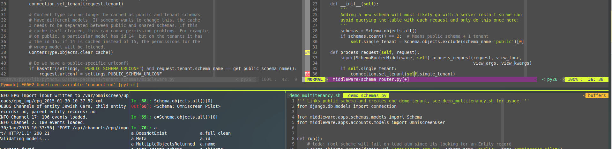

Python, Django, JavaScript Freelancer
Hire me for full stack web development and unix server administration

Python & Django are my preferred weapons of choice on the backend from small scripts to full fledge web portals with restful API. I love it for it's clear, efficient structure, powerful libraries and multitude of well-maintained add-on modules. From LDAP access to XML parsing and geospatial operations, python has a library for you.
After many years of working with vanilla JavaScript and jQuery I was happy to switch to modern MVC frameworks. E.g. Vue.js in combination with django-restframework is a powerful bundle that makes developing dynamic pages and single page applications a breeze.
I'm familiar with setting up and maintaining Debian, Ubuntu and CentOS servers. Automated scripts I wrote with fabtools make my life easier as many server tasks are repetitive and lengthy which makes manual execution error prone. Docker, nginx, gunicorn and supervisord help me with a solid setup & deployment.
Unit tests that ensure every line of code written is executed and every edge case was considered saves time and trouble and gives me confidence in the quality of my code. Selenium helps ensure that that new CSS rule did not break important functionality and limits boring manual testing.
It takes time to fully understand and utilize the power of the Django framework, it's ORM and it's popular addons. Pair programming, code reviews of pull requests or restructuring and commenting of existing code can help your developers to vastly improve their skills. For a previous employer I sat with the staff to solve problems together or showed how bloated code can be simplified.
Atlassian Confluence, Jira, Redmine, gitlab, github, jenkins. I'm familiar with the industry standard of project monitoring and team collaboration. Accessing your VPN, git repositories or servers via ssh is not a stumble stone for me.
My name is Martin and I have been working since more than ten years as freelancer on web applications. I have also taken on long term contract work in Vietnam, Singapore and Australia where I worked as part of international teams in startups as well as MNCs. Starting from university I have jumped at possibilities to live overseas and experience the cultural differences first hand. An opportunity for relocation short or long-term is still welcomed from my side. I'm fluent in English and German, studied in Germany and China, graduated with a Bachelor of Science in Online Media and gained an 'Advanced Python' certificate from the University of Illinois.
My detailed CV and references are available on request.
For a code sample you may want to have a look at my hamster-bill project on github where you can see how I automated my bill creation. Feel free to also check out my stackoverflow profile. My questions and answers will give you an impression of how I approach coding problems. Giving back or teaching is a rewarding experience and I'm happy to be in the top 14% of contributors mostly for Django, Python and JavaScript questions. Since 2016 I'm the primary maintainer of the django-rest-knox project, an extension of the popular django-rest-framework.
An efficient setup makes for fast, seamless progress and a productive day. Over time I customized each module to work hand in hand and be my perfect Swiss Army knife for writing and testing code in a unix terminal. You can find a sample project with python code on my github page.
Having a smart, informative shell speeds up all the basic tasks or makes entering commands obsolete in the first place, like showing me my current git branch and status.
For me the most productive way to write and navigate text and code that also runs inside a terminal.
Checks my code while I write it, organizes imports for me and keeps my code PEP8 compatible without me thinking about it.
A tiling window manager that works for me like tmux before but does not stop with terminals. Enables me to code, look at the result in a browser, watch a log file, restart services, edit a config file and still have my editor open all without overlap or needing to use the mouse.
Quickly searching the database with the Django ORM, trying out a complicated table join or just punching in code to see the immediate response. All the power of the framework waiting for me in the same terminal as my editor saves me time and headache.
ag, sed, tr, cut, tac, sort, ... chaining these little tools together may not always be the most readable but most likely the biggest bang for your buck in terms of time efficiency, while also reminding you of doing one thing and doing it good.
My emphasis in web development is the backend: database modeling, request processing, serving files, middlewares, API access, authentication etc. Also setting up the webserver itself. supervisord, nginx & gunicorn are my preferred combination as it gives me a generic approach, dramatically simplifies configuration, scales well and has a proven track record with big sites. I also have experience with apache. My typical web server runs Debian, Ubuntu or CentOS as they are known to be stable, resource friendly and safe server systems with a huge range of software packages.
Writing extensive valid XHTML and CSS in pure form or as part of a framework's templating language has always been part of my work scope. I do have a university backed concept of design rules but it is not my strong point. I prefer to leave layout and UI to designers and concentrate on the functionality. However design frameworks like bootstrap enable me to skip much of the legwork and put together attractive layouts too.